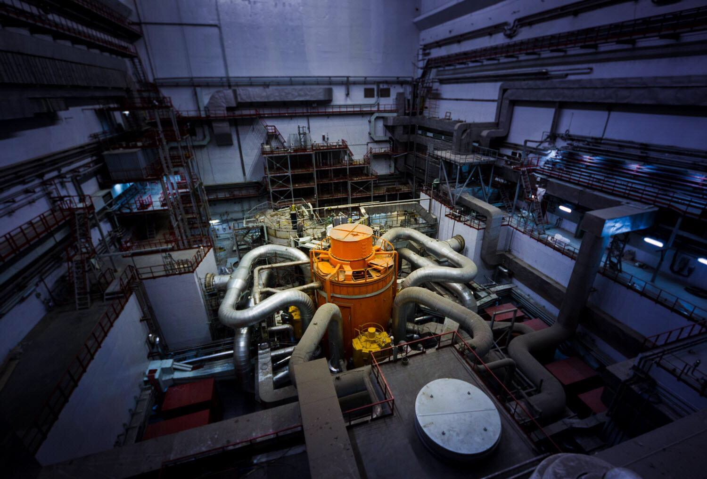
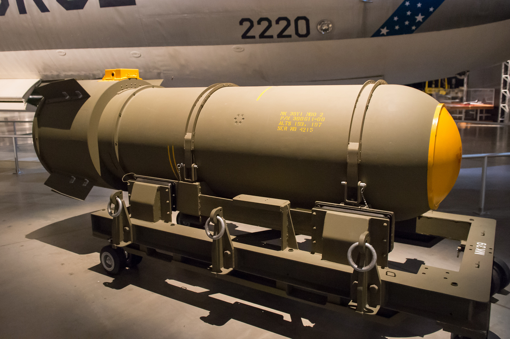
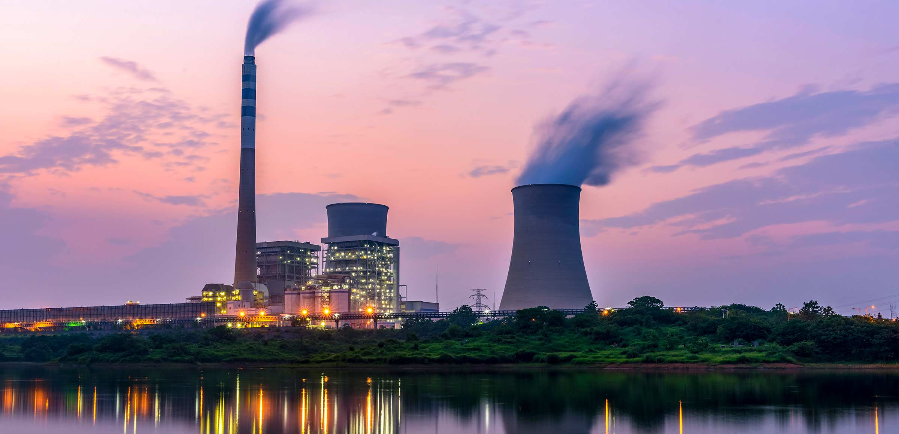
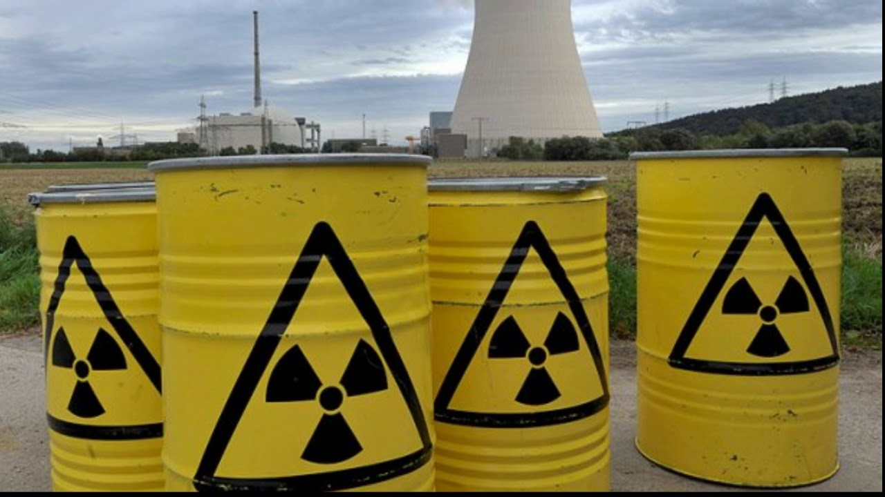

Inicio
La energía nuclear es una forma de energía obtenida a partir de la liberación controlada de energía de átomos. Esta página explora diversos aspectos relacionados con la energía nuclear, incluyendo su historia, aplicaciones y impacto en la sociedad.
La energía nuclear se utiliza comúnmente en la generación de electricidad a través de reactores nucleares. Sin embargo, también ha sido objeto de controversia debido a los riesgos asociados, como la proliferación de armas nucleares y los desechos radiactivos.

Uranio
El uranio es un elemento químico que desempeña un papel fundamental en la producción de energía nuclear. Es utilizado como combustible en los reactores nucleares, donde se somete a procesos de fisión para liberar energía de manera controlada.

Reactores Nucleares
Los reactores nucleares son instalaciones diseñadas para controlar y mantener reacciones nucleares. Existen diversos tipos de reactores, cada uno con sus propias características y aplicaciones, desde la generación de electricidad hasta la producción de isótopos médicos.
Bombas Nucleares
Las bombas nucleares son dispositivos explosivos que utilizan reacciones nucleares para liberar una gran cantidad de energía en forma de explosión. Estas armas son altamente destructivas y han sido objeto de intensos debates éticos y políticos.
Ventajas
La energía nuclear tiene ventajas significativas, como la capacidad de generar grandes cantidades de electricidad con bajas emisiones de gases de efecto invernadero. Además, proporciona una fuente de energía constante y confiable, independientemente de las condiciones climáticas.
Desventajas
Sin embargo, la energía nuclear también presenta desafíos y desventajas, como la gestión de residuos radiactivos, el riesgo de accidentes nucleares y la preocupación por la proliferación de armas nucleares. Estos aspectos han llevado a debates sobre la viabilidad y seguridad de su uso a largo plazo.
